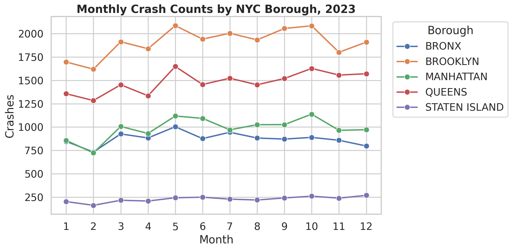
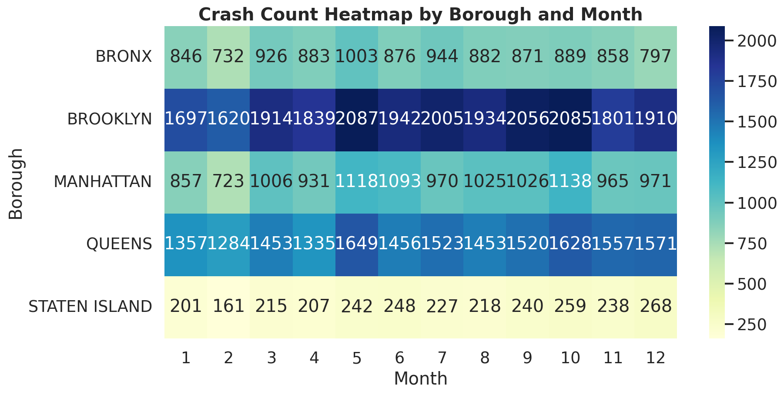
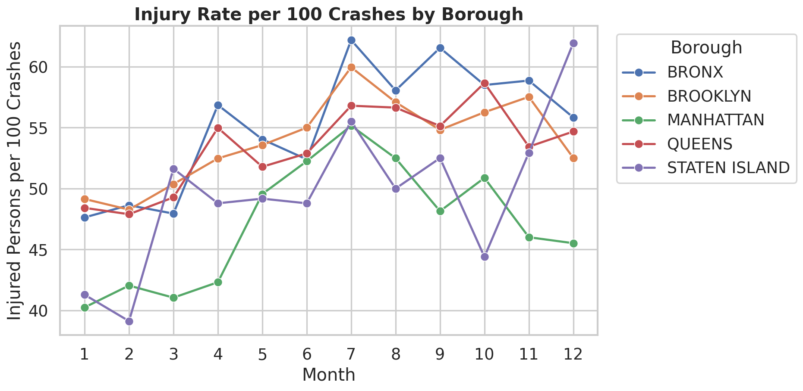
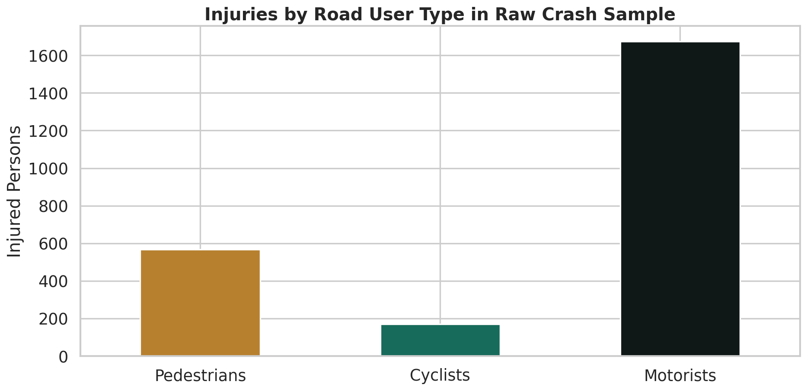
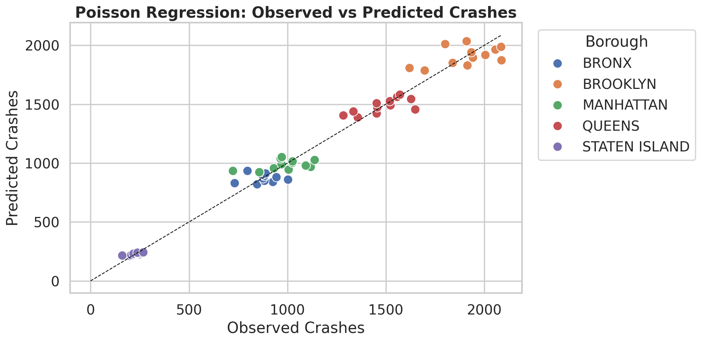
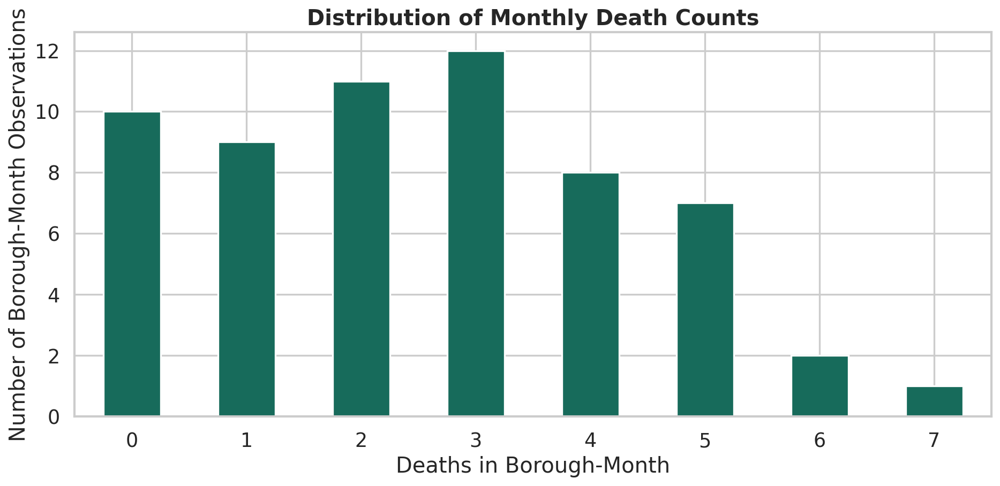

月度事故趋势
展示不同 borough 在 2023 年的事故数量变化。
Chapter 04 Visuals
这些图由第 4 章的本地数据生成，用来快速预览描述性分析和模型结果的呈现效果。

展示不同 borough 在 2023 年的事故数量变化。

把 borough-month 面板转换为宽表，观察高事故月份和区域。

比较每 100 起事故对应的受伤人数，弱化事故规模差异。

比较行人、骑行者和机动车使用者在样本中的受伤人数。

比较泊松模型预测事故次数与实际事故次数。

展示死亡事故计数中的零值，为零膨胀模型建立直觉。